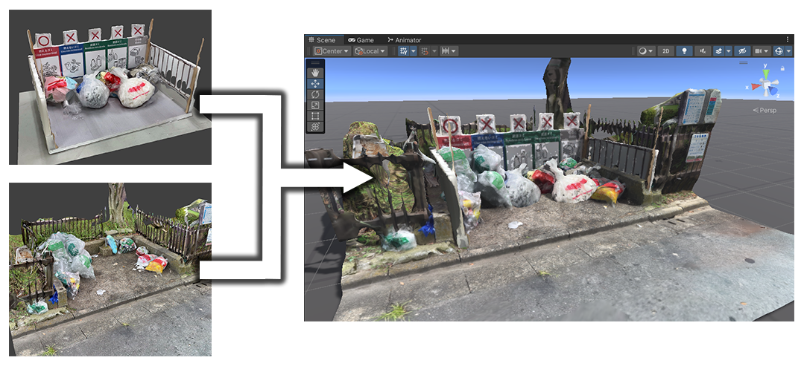

01. 概要
2025年7月よりメタバースプラットフォームでの活動を開始。市販の3Dアセットを組み合わせる際、パーツごとに異なるマテリアルや光の反射の違和感を解消する調整を実践。情報デザインの理論に基づく構図設計や、コミュニティのトレンドを反映した写真編集のワークフローを構築しています。
02. 制作プロセスとこだわり
3Dアセットの質感最適化とキャラクターデザイン
異なる制作者によって作られた3Dアセットを組み合わせる際、シェーダー設定やテクスチャの質感の差異により、全体の統一感が損なわれる課題がありました。これに対し、Unity上でマテリアル設定やパラメータを微調整し、実際のバーチャル空間内での表示を確認しながら質感を統一。全体を調和させつつ、キャラクターの個性を引き立てるチャームポイントを意図的に配置しています。
空間の特性を活かしたカメラワークとレタッチ
仮想カメラギミックを用い、三分割法などの構図や被写界深度を適用。自在なカメラ配置やポーズ固定といったデジタル空間の長所を活かし、空間とアバターが調和する瞬間を切り取っています。また、コミュニティのSNS等で好まれる一枚絵のイラスト調のトレンドを分析し、Photoshopを用いて光の向きを意識したトーンカーブやカラーバランスの調整を行っています。


03. 地域連携演習への応用
他学類（芸術専門学群）との合同演習「アート・デザインプロデュース演習（ADP）」において、茨城県常総市の外国人移住者向けに、言葉の壁を越えて直感的に分別がわかるゴミ捨て場可動看板のデザイン・制作プロジェクトに参画。制作にあたり、バーチャル空間の検証技術を現実のまちづくりへ応用しました。
具現化のプロセスとして、看板の制作予定物を3D化した模型データと、看板設置前の現地の様子をそれぞれ3Dメッシュとして構築。これらをUnity上で合成することにより、実際に設置した場合の完成形を事前に高精度に可視化する環境を構築しました。この三次元的な事前検証を経て、実際の物理的な組み立て、現地への設置まで一連の工程を遂行しました。

// 開発プロセス：3D模型と現地の環境メッシュをUnity上で合成した事前検証

// 完成物：実環境へ組み立て・設置を完了した分別可動看板